1909 - Criação das Escolas de Aprendizes Artífices
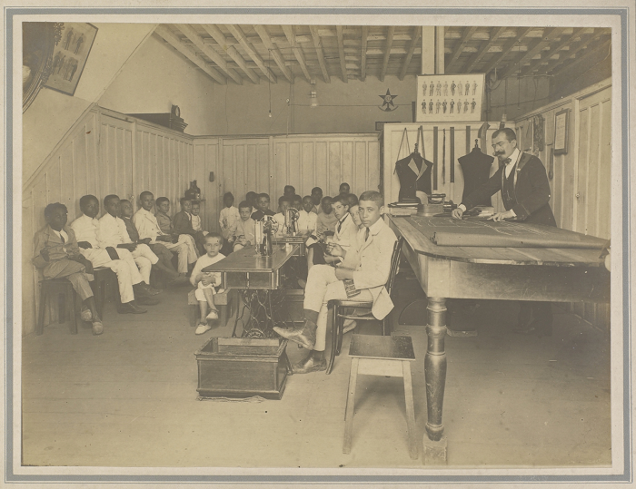
Em 1909, o presidente Nilo Peçanha assinou o Decreto nº 7.566, instituindo as “Escolas de Aprendizes Artífices”.
Essas escolas foram criadas para oferecer ensino profissional, inicialmente voltado para jovens desfavorecidos,
com foco em atividades manuais e industriais. A criação dessas escolas foi um passo importante na política de
industrialização do Brasil, buscando preparar mão de obra qualificada para o mercado emergente e desenvolver uma
classe trabalhadora capacitada.
1927 - Ensino Profissional Obrigatório
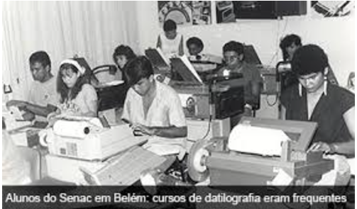
O Congresso Nacional aprovou o Projeto de Fidélis Reis, que estabelecia o ensino profissional obrigatório.
Essa iniciativa refletiu a crescente valorização da educação técnica como meio de promover o desenvolvimento
econômico. A obrigatoriedade do ensino profissional tornou-se uma estratégia para impulsionar a indústria
nacional, além de alinhar-se aos modelos de educação profissional em países como a Alemanha.
1930 - Ministério da Educação e Saúde Pública
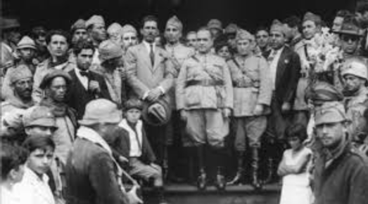
A criação do Ministério da Educação e Saúde Pública marcou uma reorganização no sistema educacional brasileiro.
A supervisão das Escolas de Aprendizes e Artífices foi transferida para o novo ministério, destacando a
importância do ensino técnico no país. Esse período também coincidiu com o início da Era Vargas, que promoveu
diversas reformas educacionais e industriais, com o intuito de modernizar o Brasil.
1937 - Constituição de 1937 e Transformação em Liceus Industriais
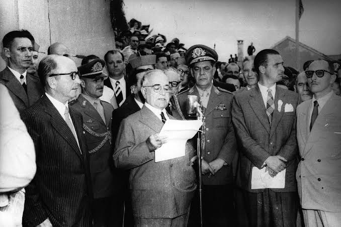
A Constituição de 1937 incluiu, pela primeira vez, o ensino técnico, profissional e
industrial como áreas específicas. A Lei nº 378 transformou as Escolas de Aprendizes e
Artífices em Liceus Industriais, que passaram a oferecer um ensino profissional abrangente.
Essa transformação visava aumentar a capacidade do país de formar profissionais especializados para
diferentes setores, especialmente com a intensificação do processo de industrialização.
1941 - Reforma Capanema
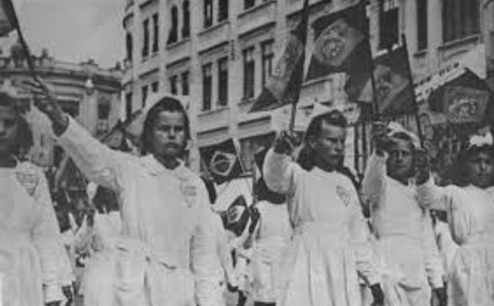
Vigora uma série de leis, conhecidas como a “Reforma
Capanema”, que remodelam todo o ensino no país.
Os principais pontos:
- O ensino profissional passa a ser considerado de nível médio;
- O ingresso nas escolas industriais passa a depender de exames de admissão;
- Os cursos são divididos em dois níveis:
- Curso básico industrial, artesanal, de aprendizagem e de mestria;
- Curso técnico industrial.
1942 - Liceus Industriais e Escolas Técnicas

O Decreto nº 4.127 transformou os Liceus Industriais em Escolas Industriais e Técnicas,
com equivalência ao ensino secundário. Isso consolidou o status das escolas técnicas e
ampliou seu alcance. O desenvolvimento das escolas técnicas refletiu a necessidade de
profissionais com formação prática em diversas áreas industriais.
1944 - FEB na Segunda Guerra
Em 1944, a participação da Força Expedicionária Brasileira (FEB) na Segunda Guerra Mundial e o empréstimo dos EUA impulsionaram a industrialização do Brasil. A FEB elevou a imagem do país internacionalmente, enquanto o financiamento americano modernizou a infraestrutura e a indústria, aumentando a capacidade produtiva. Após a guerra, o Brasil vivenciou um crescimento econômico significativo, intensificando a industrialização e moldando seu futuro econômico e social.
1956/1961 - Governo do JK
Entre 1956 e 1961, o governo de Juscelino Kubitschek, com o plano "50 anos em 5", acelerou a industrialização e modernização do Brasil, focando em infraestrutura, energia e transportes. Para atender às demandas da nova economia, investiu na formação de profissionais por meio de instituições de ensino técnico, essenciais para setores estratégicos como construção civil, siderurgia e automobilística. A educação profissional tornou-se crucial para o desenvolvimento do país.
1959 - Escolas Técnicas Federais
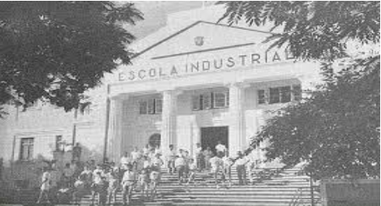
Em 1959, as Escolas Industriais e Técnicas se tornaram Escolas Técnicas Federais, ganhando autonomia didática e administrativa. Essa mudança aumentou a eficiência na formação de profissionais qualificados, alinhando o ensino técnico às demandas da modernização e do crescimento industrial do Brasil.
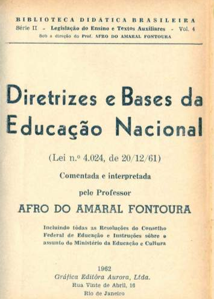
1961 - Lei 4.024
A Lei 4.024 de 1961, marco da educação brasileira, equiparou o ensino técnico ao acadêmico, valorizando a formação profissional. A legislação flexibilizou currículos, adaptando-os às demandas do mercado e fortalecendo a formação prática. Esse período aproximou a educação do desenvolvimento econômico, com as Escolas Técnicas Federais focando na qualificação para setores estratégicos como indústria, comércio e agricultura, impulsionando a industrialização do Brasil.
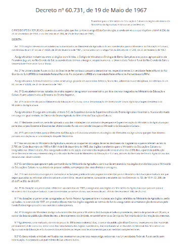
1967 - Decreto 60.731
Em 1967, o Decreto 60.731 transferiu as Fazendas Modelos do Ministério da Agricultura para o MEC, transformando-as em escolas agrícolas. Essa medida fortaleceu a educação rural, formando profissionais qualificados para modernizar a agricultura, integrar ensino e prática agrícola e atender às demandas da mecanização e inovação no campo, impulsionando o crescimento econômico do setor.
1971 - Formação Técnica Obrigatória
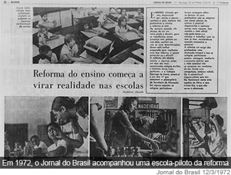
A Lei de Diretrizes e Bases da Educação Brasileira, em sua formulação,
tornou obrigatória a transformação dos currículos do ensino médio em
técnico-profissionais. Essa medida representou um novo paradigma educacional,
que buscava priorizar a formação de técnicos capacitados para atender às demandas
imediatas do mercado de trabalho. Sob esse regime de urgência, a educação enfrentou
o desafio de alinhar a qualificação técnica às necessidades sociais e econômicas,
promovendo uma integração mais eficiente entre ensino e prática profissional.
Essa transformação, embora desafiadora, destacou-se como uma tentativa de preparar
os jovens para um cenário que já se mostrava dinâmico e competitivo.
1978 - Criação dos CEFETs
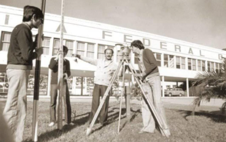
A Lei nº 6.545, promulgada em um momento de reestruturação do ensino técnico no Brasil,
promoveu uma transformação significativa ao elevar o status de três Escolas Técnicas
Federais localizadas no Paraná, em Minas Gerais e no Rio de Janeiro. Essas instituições
foram convertidas em Centros Federais de Educação Tecnológica (CEFETs), marcando um passo
importante na modernização do ensino técnico e na ampliação das oportunidades educacionais
e profissionais. Essa mudança teve como objetivo fortalecer a formação tecnológica no país,
contribuindo para o desenvolvimento de mão de obra qualificada e para o avanço econômico e
social das regiões atendidas por essas instituições.
1980 - 1990 - Impacto da Globalização na Educação
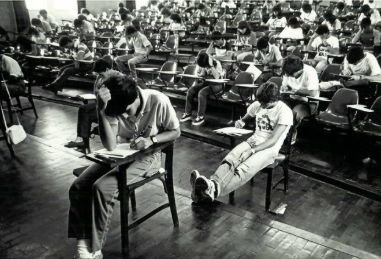
A globalização impactou profundamente a educação profissional no Brasil,
exigindo uma reestruturação para atender às demandas do mercado global.
A intensificação tecnológica e a automação dos processos produtivos aumentaram
a necessidade de trabalhadores qualificados, levando instituições como os CEFETs
a oferecer cursos mais especializados e alinhados às exigências do mercado. Apesar
dos avanços, desafios como a universalização do acesso e a conciliação entre qualificação
técnica e formação crítica permanecem.
1994 - Instituição do Sistema Nacional de Educação Tecnológica
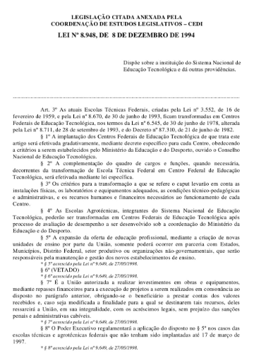
A Lei 8.948, de 8 de dezembro:
- institui o Sistema Nacional de
Educação Tecnológica, transformando, gradativamente, as ETFs e as EAFs
em CEFETs;
- A expansão da oferta da educação profissional somente
ocorrerá em parceria com Estados, Municípios e Distrito Federal, setor
produtivo ou organizações não governamentais, que serão responsáveis
pela manutenção e gestão dos novos estabelecimentos de ensino.
1996 - Educação Profissional na LDB
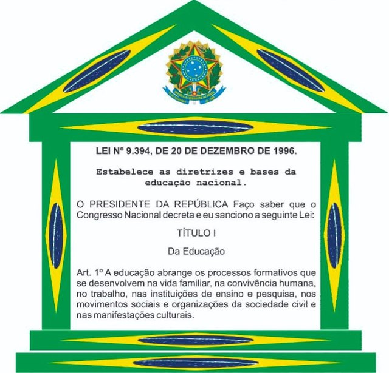
Em 20 de novembro, a Lei 9.394 (Lei de Diretrizes e Bases da
Educação Nacional/LDB) dispõe sobre a Educação Profissional
num capítulo próprio.
1997 - Decreto 2.208
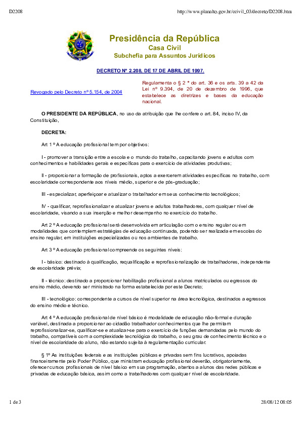
O Decreto 2.208 regulamenta a educação profissional e cria o Programa de Expansão da Educação Profissional (Proep), marcando um passo importante na estruturação e organização da educação profissional no Brasil.
1999 - Transformação das Escolas Técnicas Federais em Centros Federais de Educação Tecnológica (Cefets)
Retoma-se o processo de transformação das Escolas Técnicas Federais em Centros Federais de Educação Tecnológica (Cefets), com o objetivo de expandir a oferta de cursos técnicos e aproximar a formação profissional das demandas do mercado de trabalho.
2004 - Decreto 5.154
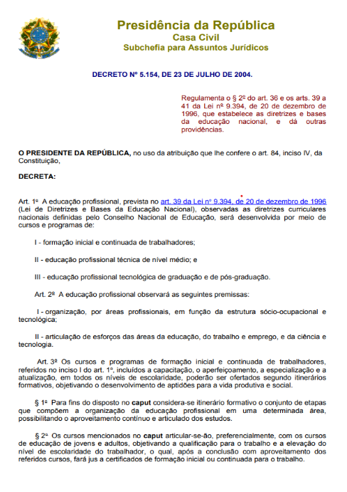
O Decreto 5.154 permite a integração do ensino técnico de nível médio ao ensino médio, criando possibilidades de formação integrada e aprimorando a capacitação dos estudantes para o mercado de trabalho logo após o ensino médio.
2005 - Lei 11.195
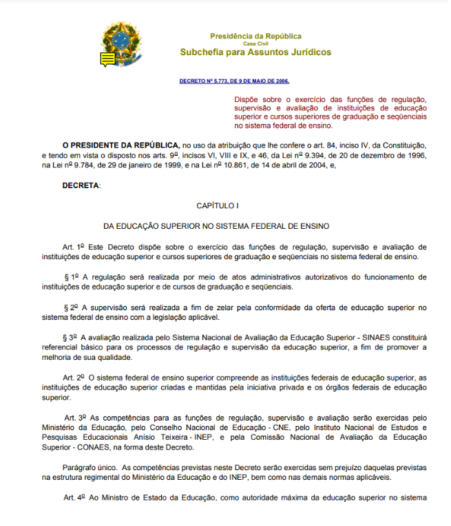
- A Lei 11.195 institui que a expansão da oferta da educação profissional preferencialmente ocorrerá em parceria com Estados, Municípios, Distrito Federal, setor produtivo e organizações não governamentais. Essa lei incentiva uma participação colaborativa na educação profissional.
- É lançada a primeira fase do Plano de Expansão da Rede Federal, com a construção de 60 novas unidades de ensino pelo Governo Federal, ampliando significativamente a oferta de cursos técnicos e profissionalizantes.
- O Cefet Paraná é transformado em Universidade Tecnológica Federal do Paraná, marcando uma nova fase de desenvolvimento para a instituição e expandindo sua missão educacional.
2006 - Decreto 5.773
Estabeleceu normas para regulação e avaliação das instituições e cursos
superiores no sistema federal.
Proeja:Programa de integração da educação profissional
com jovens e adultos, para atender quem não concluiu os estudos em idade
regular.
Catálogo dos Cursos Superiores de Tecnologia:Criado
para padronizar e organizar os cursos técnicos.
2007 - Segunda fase do plano de expansão
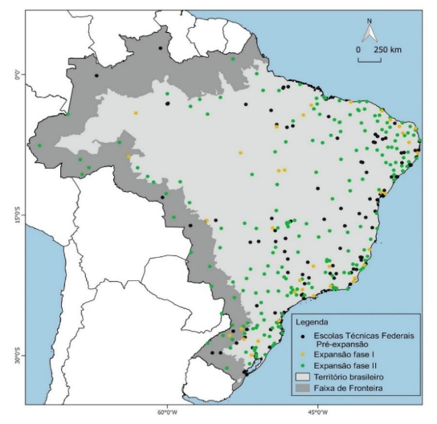
Iniciada a segunda fase, com meta de 354 unidades até 2010.
Programa Brasil profissionalizado: Incentivo ao ensino
técnico-profissionalizante integrado ao ensino médio nas redes
estaduais.
Catálogo dos Cursos Técnicos: Lançado para padronizar e
melhorar a qualidade dos cursos técnicos.
2008 - Articulação para criação dos Institutos Federais
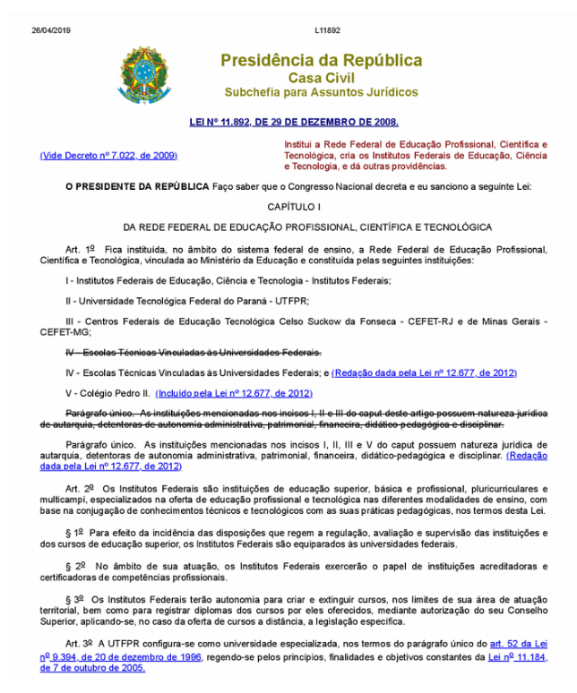
Houve um movimento para reorganizar a Rede Federal, com a criação dos
Institutos Federais, que reuniram as escolas técnicas e agiriam com
maior autonomia para oferecer educação profissional e tecnológica em
todos os níveis, do médio ao superior.
2009 - Centenário da Rede Federal
Comemoração dos 100 anos da criação da Rede Federal, que teve origem em
1909 com a criação das primeiras escolas de aprendizagem, voltadas para
o ensino profissional.
2024 - A Expansão dos Institutos Federais
A Rede Federal conta com 685 unidades em todo o Brasil, abrangendo 38
Institutos Federais, 2 Centros Federais de Educação Tecnológica
(Cefets), a Universidade Tecnológica Federal do Paraná (UTFPR), 22
escolas técnicas vinculadas a universidades federais e o Colégio Pedro
II.
O Governo Federal anunciou, no dia 12 de março, a criação de 100 novos
campi dos Institutos Federais de Educação, Ciência e Tecnologia(IFs). A
iniciativa alcançará todas as unidades da Federação, gerando 140 mil
novas vagas, majoritariamente de cursos técnicos integrados ao ensino
médio.